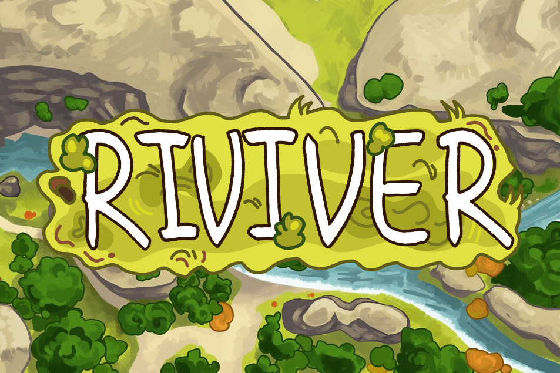
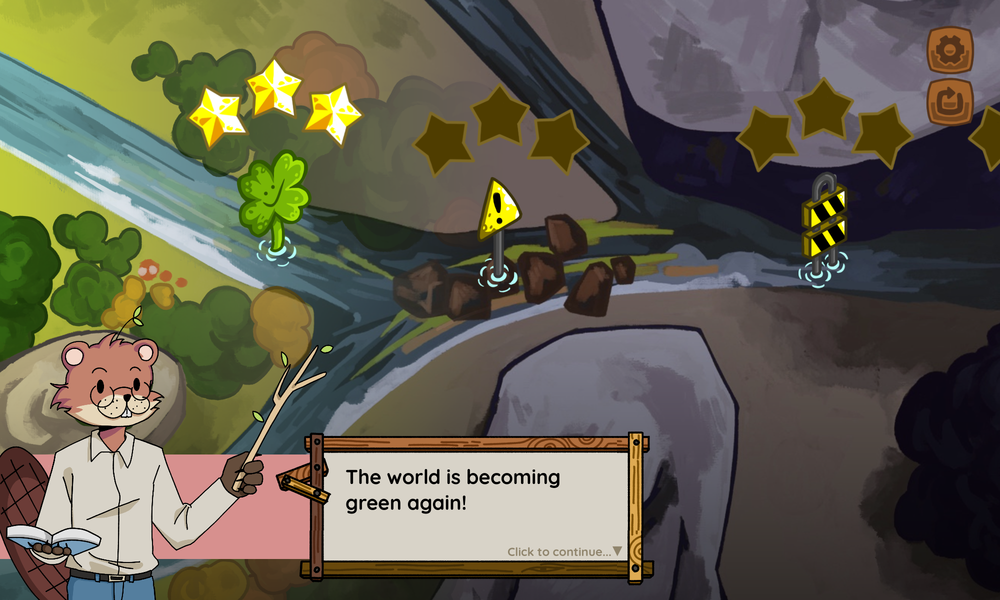
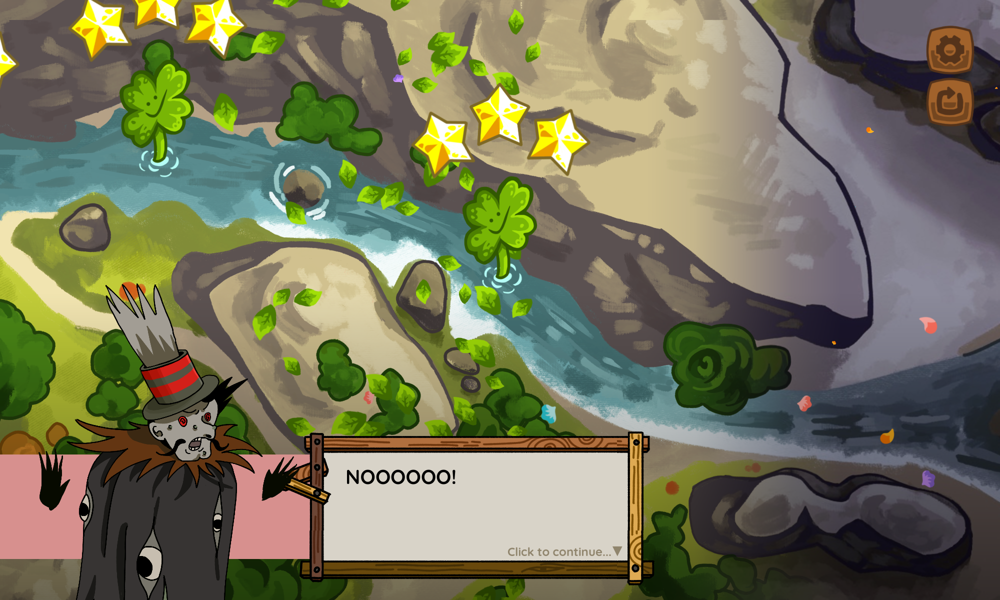
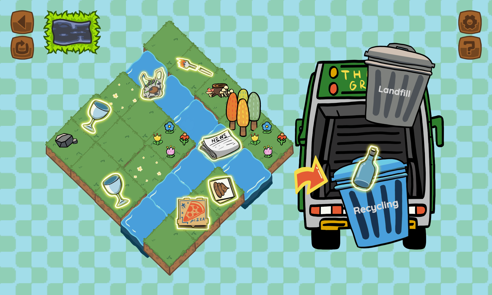
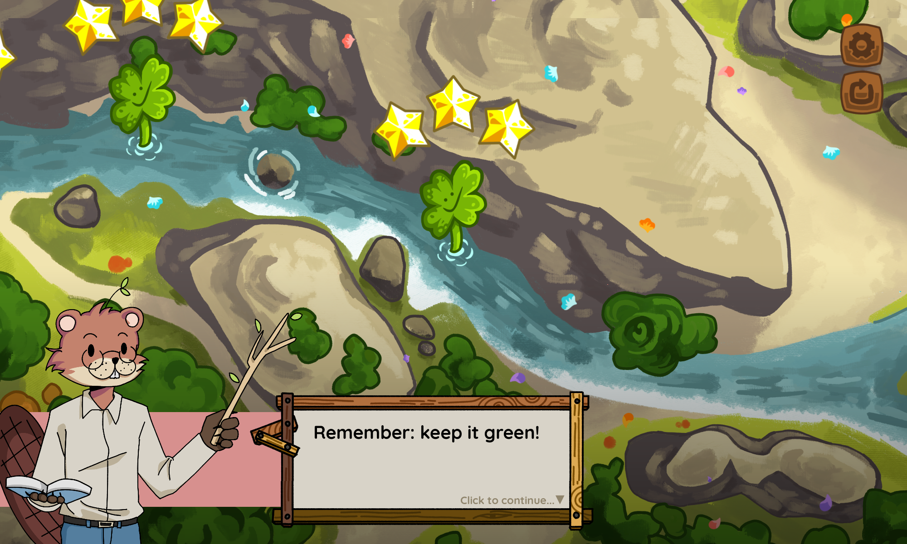

Leading a team of six in developing a game.

In Spring 2025, I took an intensive game development bootcamp course taught by the co-founder of Bethesda Softworks. Over 13 weeks, I led a team of six in developing a game called Riviver.
In the end, we were selected as the best out of three competing teams by a panel of industry professionals.
According to the course description, we were required to make an educational video game targeted at 2–5th graders. I came up with Riviver, a game about reviving a polluted world. After successfully pitching the concept, I was selected as a team leader.
Leading my team was a huge learning experience. I had to quickly figure out how to manage semester-long plans, organize and support my team members, on top of contributing to the project as a programmer.
We met on a regular basis to discuss progress and future plans. We visualized our ideas on paper to ensure we were all on the same page.
In the middle of the semester, disaster struck: we decided our original design was too large, and we were forced to pivot. In the weeks that followed, we designed a new, tight concept, split our efforts, and produced the winning game, Riviver. That sprint taught me a lot about working under pressure, and I look back on those weeks fondly!
Riviver centers around restoring a polluted river to health. You are aided by a plucky scientist to defeat the evil king of pollution, Polluto.
The level select screen features an initially dismal river. As you complete levels, the river transforms into a lush paradise.


The gradual transformation allows kids to visualize their impact in a satisfying manner. We found that kids engaged well with this narrative!
Each level displays a star rating, allowing kids to score themselves. When we boothed our game at a local middle school, the star ratings encouraged many kids to replay levels for completion.
Levels themselves take the form of dioramas. They're split into minigames, each dealing with one form of water pollution.

The resulting architecture is extremely modular: levels can be created easily by composing minigames with different parameters. This proved extremely helpful to completing Riviver on our tight schedule.
Each of our minigames teaches concepts from the Next Generation Science Standards (NGSS).
You can download Riviver on Itch for MacOS and Windows.
